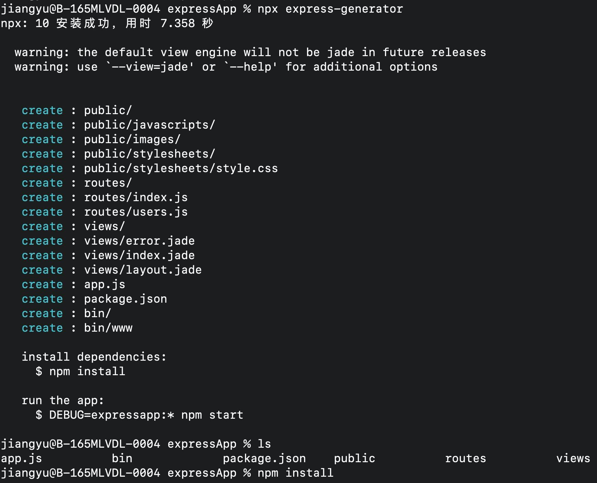
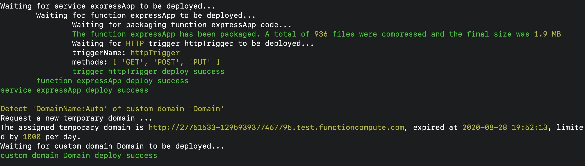
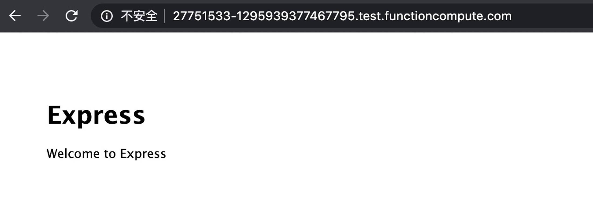

- 01 架构的演进.md.html
- 02 Serverless 的价值.md.html
- 03 常见 Serverless 架构模式.md.html
- 04 Serverless 技术选型.md.html
- 05 函数计算简介.md.html
- 06 函数计算是如何工作的？.md.html
- 07 函数粘合云服务提供端到端解决方案.md.html
- 08 函数计算的开发与配置.md.html
- 09 函数的调试与部署.md.html
- 10 自动化 CI&CD 与灰度发布.md.html
- 11 函数计算的可观测性.md.html
- 12 典型案例 1：函数计算在音视频场景实践.md.html
- 13 典型案例 3：十分钟搭建弹性可扩展的 Web API.md.html
- 14 Serverless Kubernetes 容器服务介绍.md.html
- 15 Serverless Kubernetes 应用部署及扩缩容.md.html
- 16 使用 Spot 低成本运行 Job 任务.md.html
- 17 低成本运行 Spark 数据计算.md.html
- 18 GPU 机器学习开箱即用.md.html
- 19 基于 Knative 低成本部署在线应用，灵活自动伸缩.md.html
- 20 快速构建 JenkinsGitlab 持续集成环境.md.html
- 21 在线应用的 Serverless 实践.md.html
- 22 通过 IDEMaven 部署 Serverless 应用实践.md.html
- 23 企业级 CICD 工具部署 Serverless 应用的落地实践.md.html
- 24 Serverless 应用如何管理日志&持久化数据.md.html
- 25 Serverless 应用引擎产品的流量负载均衡和路由策略配置实践.md.html
- 26 Spring CloudDubbo 应用无缝迁移到 Serverless 架构.md.html
- 27 SAE 应用分批发布与无损下线的最佳实践.md.html
- 28 如何通过压测工具+ SAE 弹性能力轻松应对大促.md.html
- 29 SAE 极致应用部署效率.md.html
12 典型案例 1：函数计算在音视频场景实践
说到迁移，大家可能都会比较感兴趣，毕竟想要尝鲜 Serverless，完全新作一些东西是不太现实的，但是迁移已有的就会很有意思。如果我们可以非常简单快速地，将已有的 Web 项目迁移到 Serverless 架构上，实现一键上 Serverless 架构，将会给大家带来很多便利。
众所周知，Serverless 架构拥有很多优秀的特性，例如：
- 按量付费：根据请求量进行收费，无请求时不收费；
- 弹性伸缩：用户无需关注流量洪峰，只需要将项目部署到 Serverless 架构，函数计算本身就具有着极强的弹性能力，可以快速地帮助大家进行动态扩容和缩容。
如果我们可以将自己已有的一些 Web 项目部署到函数计算上，那么我们自己的这些项目也将会拥有以上特性。
操作步骤演示
- 点击查看【视频演示】
1. 准备一个 Express 项目

先准备一个已经存在的 Express 项目进行测试，如果没有 Express 项目，我们可以初始化一个。
初始化完成，我们可以按照提示，进行 npm install，安装相关的依赖。此时，我们的一个 Express 项目就完成了初始化。
2. 通过 Fun 工具一键部署

当我们项目完成初始化之后，我们可以通过 Funcraft 工具，一键进行项目部署。所谓的一键进行项目部署，并不夸张，因为，你只需要执行 fun deploy -y，系统会自动识别您的项目类型，并且帮您进行部署。

完成部署之后，我们可以看到一个自定义域名，打开这个网址，可以看到，一个 express 的本地项目已经完成了部署，并且已发布到线上。
至此，我们完成了一个简单的 Web 框架的迁移。
当然，函数计算所拥有的一键迁移能力不仅仅是 Express 框架，更多相关的资料可以访问函数计算的产品页！